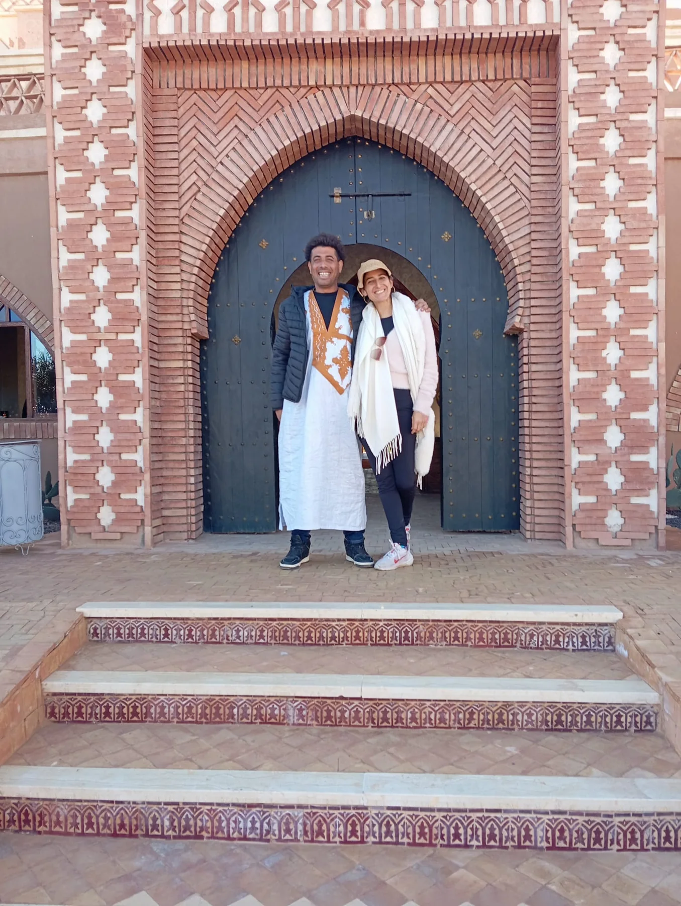

Una historia que empieza en Marruecos.
Dos personas, dos caminos y una vida compartida entre Cataluña y el Sahara.

Desde 2009, construyendo viajes juntos.
Xènia y Abdoul empezaron a recorrer y trabajar en Marruecos en 2009. Con los años fueron creando una red de alojamientos y colaboradores y coordinando viajes para viajeros, grupos y profesionales del turismo.
Hoy esa experiencia toma forma en Sahara Bless Travel: una manera cercana de organizar viajes, poniendo a las personas y el conocimiento local en el centro.
El Sahara es parte de su vida.
Abdoul nació en el Sahara y vivió allí hasta los siete años. Ahora es propietario de su propio campamento en Erg Chigaga. Su vínculo con el desierto acompaña las rutas y experiencias que el equipo diseña en esta región.
Con una flota propia de vehículos 4×4 y una larga trayectoria trabajando con hoteles en Marruecos, el conocimiento del terreno también se traduce en capacidad operativa.

Empiezan los viajes
Xènia y Abdoul empiezan a diseñar y coordinar experiencias en Marruecos.
Relaciones que se construyen
El trabajo sobre el terreno conecta al equipo con alojamientos y colaboradores locales a lo largo del país.
Sahara Bless Travel
Una propuesta que reúne viajes para particulares y colaboración con agencias, con un foco especial en el Sahara.